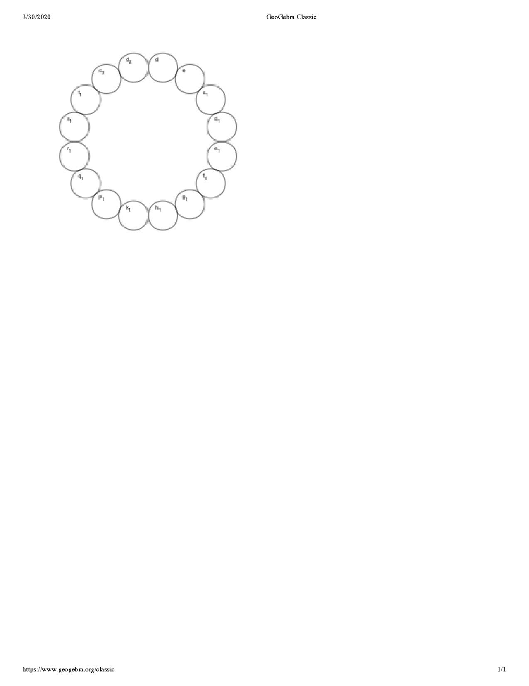

I started out the week by just testing out some of the different output devices. All the circuits worked pretty well:
My goal was to hook up the servo and the stepper together, to try to get 2 d.o.f. and to be able to create polar motion. I started by getting them both on the same program (since exactly where they moved to wasn't really important):
#include
#include
const int stepsPerRevolution = 200; // change this to fit the number of steps per revolution
// for your motor
int angle = 0;
int sm = 1;
int i = 0;
// initialize the stepper library on pins 8 through 11:
Stepper myStepper(stepsPerRevolution, 8, 9, 10, 11);
Servo myservo; // create servo object to control a servo
void setup() {
myservo.attach(6); // attaches the servo on pin 6 to the servo object
// set the speed at 60 rpm:
myStepper.setSpeed(60);
// initialize the serial port:
Serial.begin(9600);
}
void loop() {
for (i = 0; i < 200; i++) {
myservo.write(i); // commands the servo to jump to its middle position (90 degrees)
delay(30);
// step one revolution in one direction:
Serial.println("clockwise");
myStepper.step(sm);
}
for (i = 200; i > 0; i--) {
myservo.write(i); // commands the servo to jump to its middle position (90 degrees)
delay(30);
Serial.println("counterclockwise");
myStepper.step(-sm);
}
}
I then hooked up a circuit with both of the pieces:
My next goal was to create a gear, to convert the motion of the stepper motor into horizontal motion. I would have just laser cut a gear had I been in the lab, which would have worked a lot better, and would have been a lot easier. Unfortunately, that wasn't an option, and so I had to draw them out myself. I used the following tutorial.
I used a lot of hot glue when putting them together, in order to bulk up the gear.
Here, just the servo is moving:
Here, the stepper and the servo are moving independently of each other.
Finally, I hooked up the 'arm' (although I accidentally didn't connect it to the servo, it theoretically should rotate with the servo, which I can just do by attaching it to the base of the stepper motor instead of attaching it to the base of the servo):
Clearly it isn't perfect, but I think that it can easily be improved upon in the coming weeks!